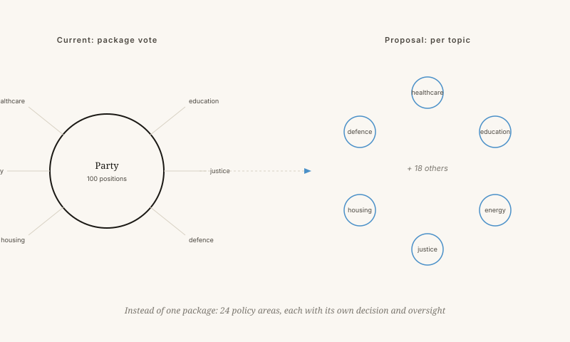

What is wrong with party politics?
An alternative: Nova Democratia, in which decisions are made on each subject by those who have something sensible to say about it.
By Jacobus van Merksteijn · 12 min read · 23 May 2026

An empty chamber — waiting for decision-making by subject
The three ailments of party politics
Parties emerged in the nineteenth century to bundle interests at a time when voters could not gather information. Today every voter has a telephone containing more knowledge than a minister in 1950.
Nova Democratia: deciding by subject
Nova Democratia is a form of governance in which decisions are made by subject, by people who have demonstrated competence and broad support on that subject. No parties, but 24 policy areas each with its own cycle of proposals, scrutiny and decision.
The three core principles: measurable value for money, independent spot checks, and prosperity as the primary goal — where respect and self-worth count too.

What if a speed limit is on the agenda?
Under the current system, parties vote for or against on the basis of their general profile. Under Nova Democratia the question is broken down into measurable components.
No party discipline, no ideology
Only once all these figures are on the table do citizens in that policy area decide. A fair weighing on measurable grounds.
This is no utopia — but not without risk either
The three biggest risks are real and deserve attention:
- Who guards the guardians? Who decides whether a spot check was conducted fairly?
- Fragmentation. If every subject is decided separately, how does the whole remain coherent? Someone must safeguard the overall consistency.
- Time. Citizens do not have time to engage with 24 subjects. How do you prevent only lobbyists from voting?
Connection to the 7D framework
In the 7D model a society is a system with multiple axes simultaneously. G: what works at municipal level can fail at national level. N: a multiplicity of choices per country is an experimental field, not a luxury. Party politics erases that multiplicity. Nova Democratia restores it.
What is wrong with party politics?
Nova Democratia proposes deciding issue by issue, with measurable cost-effectiveness and no more bundle votes.
Political parties arose in the nineteenth century to aggregate interests at a time when voters had no access to information. Today every voter carries a phone with more knowledge than a minister in 1950. Yet we remain stuck in three structural defects: bundle voting (you receive ten things you did not ask for in order to get two you want), loyalty over substance (politicians vote not what they think but what the party thinks), and the four-year illusion (policy set to the horizon of the next election, not the next generation).
Nova Democratia is a system of government with 24 policy areas, each running its own cycle of proposals, review, and decision. On each topic, those who have demonstrated competence and broad support in that area decide. Three core principles: measurable cost-effectiveness, independent spot-checks, and prosperity as the primary goal — in which respect and dignity also count.
A concrete example: on a speed limit, four measurable questions come first — road safety (50 to 70 fewer deaths per year), travel time (12 million hours extra per year), CO₂, and economic interests. Only once those figures are on the table do citizens in that policy area decide. No party discipline. No ideology.
Not a utopia — but not without risk
Three risks are real and deserve attention: who guards the guardians; how the whole stays coherent across 24 separate topics; and how you prevent only lobbyists from voting. In the 7D framework, Nova Democratia restores the N-value — the multiplicity of choices that party politics erases.